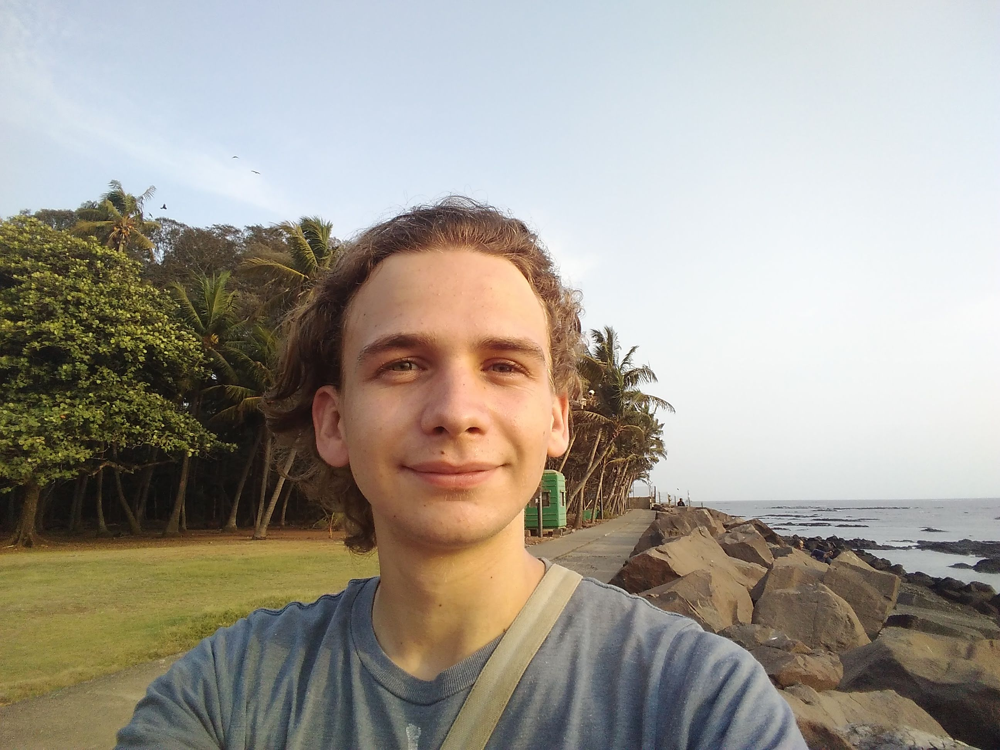

Colin Davalo
email: colinmarcthierry.davalo (at) unito.it
Je suis un post-doctorant au département de mathématiques "Giuseppe Peano" de l'université de Turin, travaillant sur le projet ERC GENERATE sous la supervision de Andrea Seppi . J'ai passé ma thèse à l'université de Heidelberg, supervisé par Beatrice Pozzetti .
Thèmes de recherche:
Représentations de groupes de surface, représentations Hitchin et maximales, representations Anosov, espaces symétriques de type non-compact, domaines de discontinuité dans les variétés drapeaux.
Voici un CV.
Pré-publications:
- Finite-sided Dirichlet domains and Anosov subgroups (avec Max Riestenberg)
pré-publication.Disponible en ligne
- Geometric structures for maximal representations and pencils
pré-publication Disponible en ligne
- Anosov deformations of Barbot representations (avec Samuel Bronstein)
pré-publication. Disponible en ligne
Publications:
- Nearly geodesic immersions and domains of discontinuity
Accepté pour publication dans Geometry & Topology. Disponible en ligne
- Maximal and Borel Anosov representations in Sp(4,R)
Advances in Mathematics
Volume 442, April 2024, 109578 Disponible en ligne
- Projective structures with (Quasi-)Hitchin holonomy (avec Daniele Alessandrini et Qiongling Li)
Accepté pour publication dans Journal of the London Mathematical Society. Disponible en ligne
Voici un lien vers ma
Thèse de doctorat intitulée "Geometric structures and representations of surface groups".
Et voici quelques
illustrations des objets que j'étudie.
Enseignement: